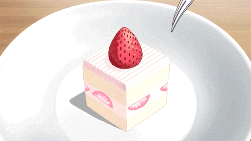
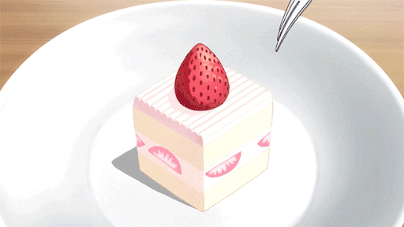

María Belén García Hernández
Inge. Azucena Cervantes Ponce
Práctica Tablas 5%
6B
04/05/2023
|
Tres capas de pastel de vainilla rellenas con fresas frescas y crema batida con queso crema y un toque de vainilla. |
Un delicioso y atractivo pastel de limón. Es importante que utilices el limón amarillo, ya que el limón verde o sin semilla puede resultar demasiado agrio para esta receta. |
Un pastel sencillo que cualquiera puede preparar en cuestión de minutos. Cubre con tu betún favorito. |
Pastel de terciopelo rojo (red velvet) con el clásico sabor de la cocoa. Prepáralo fácilmente y embetúnalo con su tradicional betún de queso crema. |
- Pastel de limon
- Pastel de chocolate
- Pastel de fresa
- Pastel de red velvet
- Pastel de vainilla
- Pastel de limón
 
